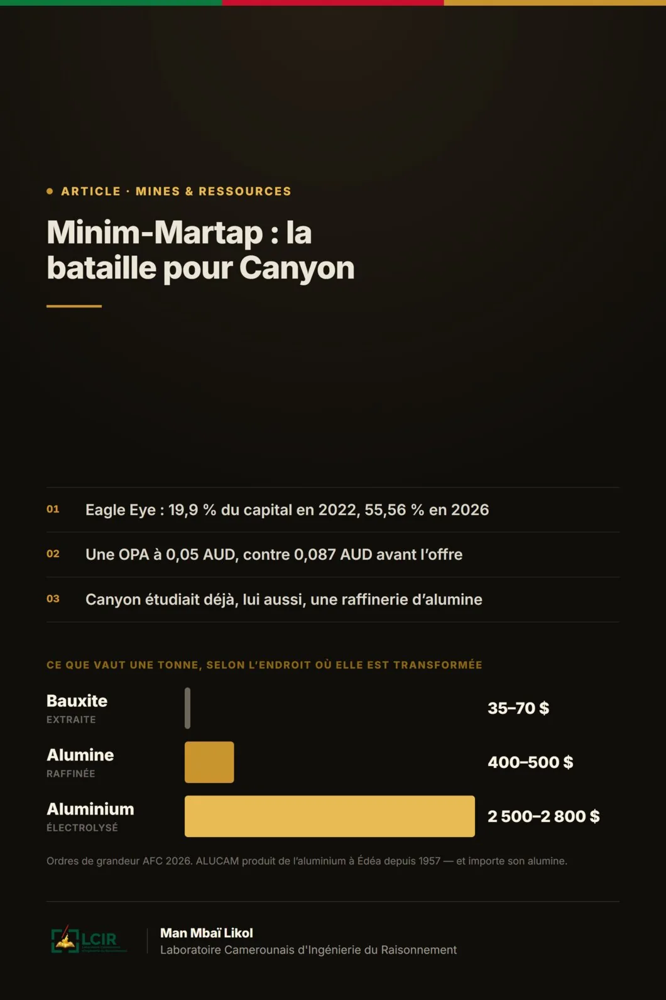

Minim-Martap : la bataille pour Canyon
Ce que le conflit A2MP–Canyon révèle sur la vraie bataille : qui captera la valeur de la bauxite camerounaise ?

Une tonne de bauxite dans le sous-sol est une ressource. Une tonne extraite est une marchandise. Une tonne transformée en alumine, puis en aluminium, devient une chaîne de valeur.
Prologue — l'information qui cache une histoire plus grande
Le 24 août 2026, l'information paraît simple : AFG Bank Cameroun suspend les nouveaux décaissements destinés au projet de bauxite de Minim-Martap, et Canyon Resources retire son calendrier de première exportation. Pour le lecteur ordinaire, la conclusion semble presque automatique : le projet va mal.
Pourtant, lorsqu'on remonte les documents boursiers australiens, les rapports de Canyon, l'offre publique d'A2MP et l'histoire de son actionnaire Eagle Eye, une autre histoire apparaît.
Depuis près de quatre ans, le même investisseur qui avait été présenté comme le partenaire stratégique capable d'aider Canyon à mettre Minim-Martap en production a progressivement pris le contrôle de la société. Aujourd'hui, ce partenaire devenu majoritaire affirme que le modèle économique de Canyon est trop optimiste, propose de racheter les minoritaires à bas prix et annonce qu'il pourrait revoir entièrement la taille et le rythme du projet. Mais il affirme en même temps vouloir construire au Cameroun une chaîne allant de la bauxite à l'aluminium.
Source : Canyon Resources, Minim Martap Update, 24 août 2026 — AFG suspend les nouveaux tirages ; Canyon retire l'objectif d'expédition au T4 2026.
1. Le casting : qui se bat, et pour quoi ?
Le premier piège consiste à parler de « Canyon » comme s'il s'agissait d'un acteur unique. En réalité, plusieurs intérêts se superposent.
| Acteur | Rôle | Intérêt propre |
|---|---|---|
| Canyon Resources | Société cotée à l'ASX, développeur du projet | Démontrer que Minim-Martap entre vite en production et justifie une valorisation élevée |
| Camalco | Filiale portant le projet au Cameroun | Exécuter — mine, logistique, autorisations |
| A2MP | Actionnaire majoritaire de Canyon (55,56 % avec ses associés) | Acquérir 100 % de la société et restructurer librement le projet |
| Eagle Eye | Véhicule d'investissement qui contrôle A2MP | Consolider une plateforme minière et métallurgique africaine |
| FEDA (Afreximbank) | Entrée au capital d'A2MP | Faire passer l'Afrique de la dépendance aux matières premières au traitement local |
| AFG Bank | Prêteur de Camalco | Récupérer son argent : vérifier que la dette reste remboursable |
| Actionnaires minoritaires | Détiennent les titres qu'A2MP veut racheter | Obtenir le meilleur prix — ou refuser |
Canyon Resources : le développeur qui a besoin du marché
Canyon est une junior minière : elle ne possède pas la puissance financière d'un géant comme Rio Tinto. Sa valeur dépend donc énormément de la confiance des investisseurs et de sa capacité à lever de l'argent. Son intérêt est de démontrer que Minim-Martap peut entrer rapidement en production et générer suffisamment de revenus pour justifier une valorisation élevée.
Source : Canyon Resources, Definitive Feasibility Study Results and Reserves Upgrade, 2 septembre 2025.
A2MP : l'actionnaire majoritaire qui veut devenir propriétaire à 100 %
A2MP ne cherche pas à devenir majoritaire : elle l'est déjà. Avec ses associés, elle contrôle 55,56 % de Canyon. Son offre publique vise donc autre chose : acheter les titres qu'elle ne possède pas, dépasser éventuellement 90 %, forcer le rachat des derniers minoritaires et retirer Canyon de la Bourse australienne. Une fois Canyon privée, A2MP pourrait restructurer plus librement l'entreprise et le projet.
Source : A2MP, Bidder's Statement, 29 juillet 2026 — offre de 0,05 AUD par action ; 55,56 % déjà contrôlés ; intention de retrait de cote et de revue du projet.
AFG Bank : elle ne vote pas, elle veut récupérer son argent
AFG Bank raisonne comme un prêteur. Tant que le projet avance selon le plan, elle décaisse. Lorsque les délais changent, que le besoin de capitaux augmente ou que les hypothèses de revenus deviennent incertaines, elle doit vérifier que la dette reste remboursable. La suspension des nouveaux tirages est donc un signal sérieux de risque financier — mais pas une déclaration de décès du projet.
Les minoritaires : le prix est leur champ de bataille
A2MP leur propose 0,05 AUD par action, alors que le titre clôturait à 0,087 AUD avant l'offre. Pour eux, la question est brutale : vaut-il mieux accepter un prix certain aujourd'hui, ou conserver des actions d'une société sous tension financière en espérant que Minim-Martap vaille beaucoup plus demain ? C'est précisément pour arbitrer ce conflit qu'un rapport d'expert indépendant est attendu.
2. Comment Eagle Eye est passé de partenaire à maître du jeu
Le conflit de 2026 n'est pas né en 2026. Il commence véritablement en décembre 2022, lorsque Canyon émet 202,9 millions d'actions à Eagle Eye à 0,06 AUD, soit environ 12,17 millions AUD. Eagle Eye devient alors le grand partenaire stratégique de Canyon, avec environ 19,9 % du capital. L'opération est présentée comme un renforcement financier capable d'accélérer Minim-Martap.
En 2023, l'histoire franchit un cap. Canyon demande aux actionnaires d'autoriser une nouvelle opération pouvant porter le pouvoir de vote d'Eagle Eye jusqu'à 56,50 % : 150 millions de nouvelles actions, l'exercice d'options existantes, 500 millions de nouvelles options et l'élection de Gaurav Gupta au conseil. Le rapport indépendant de BDO juge alors la transaction « not fair but reasonable » — pas équitable au sens de la valorisation, mais raisonnable compte tenu de la situation et des avantages attendus.
En septembre 2023, Eagle Eye détient encore 19,98 %. Mais en 2024, il achète progressivement des titres sur le marché : en novembre 2024, son bloc atteint 41,72 % ; en mars 2025, Eagle Eye et Gagan Gupta atteignent 43,61 %. En juillet 2026, le bloc A2MP et associés atteint 55,56 %.
La différence est fondamentale : le partenaire stratégique de 2022 est devenu l'actionnaire qui peut empêcher pratiquement toute offre concurrente de réussir sans son accord.
Sources : Canyon Resources, prospectus du 23 décembre 2022 ; Notice of AGM, octobre 2023 ; ASX Form 604, 6 mars 2025.
3. Qui est Gagan Gupta, et pourquoi son parcours compte
Gagan Gupta n'est pas un financier apparu avec Minim-Martap. Ancien dirigeant d'Olam en Afrique, il a bâti autour d'ARISE un modèle fondé sur les partenariats avec les États, les infrastructures logistiques et les zones industrielles. La Banque africaine de développement le présente comme le fondateur d'une plateforme ayant investi plus de 2 milliards USD et engagé plus de 4 milliards USD dans de grands projets d'infrastructures africains.
Son parcours compte parce qu'il permet de vérifier une chose : le discours de transformation locale est-il une promesse de brochure, ou existe-t-il des précédents ?
Le test gabonais : Nkok
Le cas le plus parlant est la zone économique spéciale de Nkok, au Gabon. Le modèle consiste à ne plus exporter seulement des grumes, mais à attirer des usines de sciage, de placage et de contreplaqué autour d'une infrastructure commune. ARISE annonce aujourd'hui 25 000 emplois directs et indirects, 265 millions USD d'exportations annuelles, un million de mètres cubes de bois transformé en 2023 et 1,6 milliard USD d'investissements directs étrangers générés.
Le test béninois : Glo-Djigbé
Au Bénin, le même modèle est appliqué au coton, au textile et à l'agro-industrie. La Société financière internationale décrit la GDIZ comme un partenariat public-privé confié à ARISE IIP, avec environ 1,5 milliard USD d'investissement prévu et des dizaines d'investisseurs industriels.
Autrement dit, le discours de transformation locale de l'écosystème Gupta n'est pas uniquement rhétorique : il existe des infrastructures opérationnelles. Cela ne garantit cependant pas qu'une raffinerie d'alumine camerounaise sera effectivement construite.
Et A2MP elle-même ?
A2MP est la branche minière et métallurgique de cette logique d'intégration. FEDA, filiale indirecte d'Afreximbank, a annoncé 300 millions USD d'investissement stratégique dans la plateforme en novembre 2025, en expliquant vouloir faire passer l'Afrique de la dépendance aux matières premières à davantage de traitement local. Le Bidder's Statement précise que FEDA détient 2,7 % d'A2MP et 275 millions USD de notes convertibles pouvant porter sa participation jusqu'à 19,9 %.
Autre précédent : au Mali, A2MP a investi 15,2 millions AUD dans Toubani Resources pour environ 18 % du capital, et a fourni une lettre d'engagement non contraignante visant au moins 160 millions USD de dette pour le projet aurifère Kobada. Le modèle est familier : capital, dette potentielle, siège au conseil et implication dans le financement.
Sources : BAD, profil de Gagan Gupta ; ARISE IIP, page GSEZ ; Banque mondiale, Gabon Systematic Country Diagnostic ; IFC, Creating Markets in Benin ; Afreximbank/FEDA, 12 novembre 2025 ; Toubani Resources, présentation d'août 2025.
4. Le cœur de la guerre : combien vaut réellement Minim-Martap ?
Canyon et A2MP ne se disputent pas l'existence de la bauxite. Ils se disputent la valeur économique du modèle.
| Paramètre | DFS de Canyon (2025) | Contre-lecture d'A2MP (2026) |
|---|---|---|
| Prime de qualité | ≈ 11 USD / tonne | ≈ 5 USD / tonne |
| Fret | 17 USD / tonne | 32 à 36 USD / tonne au démarrage |
| Taxes, prélèvements, logistique | Intégrés au modèle de base | Investissements supplémentaires à prévoir |
| Conclusion tirée | Projet « Tier One », VAN 835 M USD, TRI 29 % | Modèle actuel possiblement non viable |
Pourquoi ces chiffres apparemment petits sont-ils énormes ? Prenons seulement le fret. Entre 17 et 34 USD la tonne, l'écart est de 17 USD.
Voilà pourquoi quelques dollars par tonne peuvent bouleverser la capacité d'une mine à rembourser une dette — et pourquoi un désaccord technique sur le fret devient une bataille de contrôle.
5. Le paradoxe : pourquoi acheter ce que l'on dit trop risqué ?
À première vue, la position d'A2MP semble incohérente : elle explique que Minim-Martap peut ne plus être viable dans sa configuration actuelle, mais elle veut posséder toute la société.
Le paradoxe disparaît si l'on distingue deux choses : le gisement et le modèle utilisé pour gagner de l'argent avec ce gisement. Une mine peut être géologiquement exceptionnelle et financièrement mal configurée. Si le minerai doit parcourir des centaines de kilomètres, puis être transbordé et expédié à bas prix, la logistique peut manger la marge. A2MP peut donc considérer que Canyon vaut moins dans son modèle actuel, tout en jugeant Minim-Martap stratégique dans un système industriel plus large.
L'écart est d'un ordre de grandeur à chaque étape. C'est toute la question posée au Cameroun : à quel niveau de cette échelle le pays veut-il se situer, et que peut-il exiger pour y parvenir ?
6. Le point que l'enquête rend plus intéressant : Canyon étudiait déjà une raffinerie
Il serait trop simple d'opposer un Canyon uniquement exportateur à un A2MP uniquement transformateur. Les propres rapports de Canyon indiquent qu'une étude de faisabilité pour une raffinerie d'alumine était déjà en cours en 2026 : en janvier, Canyon indiquait qu'elle était achevée à 45 % ; en juillet, son rapport trimestriel signalait encore que cette étude progressait.
Le conflit porte donc moins sur « transformer ou ne pas transformer » que sur le rythme, le financement, l'échelle et le contrôle de cette transformation. C'est une nuance essentielle : A2MP ne découvre pas l'idée d'une filière locale ; elle veut potentiellement l'intégrer à une plateforme plus vaste qu'elle contrôle.
Source : Canyon Resources, Minim Martap Development Update, 7 janvier 2026.
7. Pourquoi le Cameroun est dans une position plus intéressante qu'il n'y paraît
Le Cameroun ne part pas de zéro dans l'aluminium. ALUCAM produit de l'aluminium primaire à Édéa depuis 1957. Sa capacité nominale est de 100 000 tonnes par an et l'entreprise indique une consommation électrique de 185 MW. Mais ALUCAM importe son alumine. C'est précisément le maillon manquant entre la bauxite camerounaise et le métal camerounais.
| Pièce | État | Ce qu'elle apporte à la chaîne |
|---|---|---|
| ALUCAM, Édéa | En production depuis 1957 — 100 000 t/an, 185 MW | L'électrolyse existe déjà ; il lui manque l'alumine |
| Extension ALUCAM (SND30) | Inscrite au pipeline industriel du MINEPAT | Porter la capacité de 100 000 à 300 000 t/an et valoriser la bauxite nationale |
| PROALU (PROMETAL) | Projet annoncé à 88 milliards FCFA | Transformation aval : bobines, tôles, câbles |
| Plateforme de Dibamba | 517 hectares, développée par ARISE IIP avec le Port autonome de Douala | Zone industrialo-portuaire — la même signature industrielle qu'à Nkok et Glo-Djigbé |
| Minim-Martap | Objet du conflit A2MP–Canyon | La ressource amont, aujourd'hui destinée à l'export brut |
Ces pièces, mises ensemble, changent la perspective. Minim-Martap pourrait être connecté non seulement à une mine et un port, mais à un système national comprenant rail, port, zones industrielles, ALUCAM, transformation aval et nouvelles capacités électriques. Ce scénario n'est pas encore réalisé. Mais il est désormais suffisamment documenté pour devenir une question de politique industrielle sérieuse.
Sources : ALUCAM, historique et chiffres clés ; MINEPAT, pipeline des projets industriels SND30 ; ARISE IIP, brochure 2025.
8. L'énergie : la contrainte que les discours oublient
Transformer la bauxite en aluminium n'est pas une simple décision politique. L'électrolyse est extrêmement gourmande en électricité : l'International Aluminium Institute situe l'intensité mondiale autour de 14 MWh par tonne d'aluminium primaire. ALUCAM, avec 100 000 tonnes de capacité nominale, annonce déjà 185 MW de consommation. Une extension massive exige donc une stratégie énergétique dédiée.
C'est ici que les grands projets hydroélectriques camerounais deviennent une pièce de l'équation — non comme un supplément d'ambition, mais comme une condition d'existence de la filière.
9. Quatre issues possibles — et ce qu'elles signifient pour le Cameroun
| Scénario | Ce qui se passe | Conséquence pour le Cameroun |
|---|---|---|
| A2MP prend Canyon et réalise une chaîne intégrée | Retrait de cote, restructuration, investissement métallurgique | Le plus ambitieux : valeur ajoutée, emplois industriels, compétences — mais aussi le plus capitalistique |
| A2MP prend Canyon mais reste sur le DSO | Le changement de propriétaire résout le financement | Le modèle extractif n'est pas modifié en profondeur |
| L'OPA échoue et Canyon se refinance | Canyon conserve sa cotation | Elle doit convaincre de nouveaux investisseurs et défendre sa propre étude de raffinerie |
| Le financement reste bloqué | Ni reprise, ni refinancement | Ralentissement prolongé, recapitalisation très dilutive ou restructuration du projet |
10. Ce que le Cameroun devrait négocier, quel que soit le vainqueur
- Un calendrier contractuel de transformation locale, avec étapes vérifiables plutôt que de simples intentions.
- Une définition précise de la part de bauxite exportable en brut et de la part destinée à une transformation locale.
- Le financement, la capacité et l'emplacement d'une éventuelle raffinerie d'alumine.
- Une stratégie énergétique dédiée, compatible avec ALUCAM, une nouvelle fonderie éventuelle et les besoins du réseau national.
- Des engagements de contenu local : sous-traitance, ingénieurs, techniciens, formation et transfert de compétences.
- Une articulation industrielle avec ALUCAM, PROALU et les zones industrialo-portuaires camerounaises.
- Des garanties en cas de changement de contrôle, de retrait de Canyon de l'ASX ou de restructuration de Camalco.
- Une gouvernance claire des infrastructures ferroviaires et portuaires stratégiques utilisées par le projet.
Conclusion — la vraie question n'est plus « quand partira le premier bateau ? »
Le retard du premier chargement est important, mais il est devenu secondaire par rapport à la bataille de contrôle qui se joue autour de Canyon. Cette bataille révèle trois choses : Minim-Martap reste suffisamment stratégique pour que son actionnaire majoritaire veuille posséder 100 % de la société ; le modèle d'exportation est suffisamment sensible aux coûts logistiques pour être remis en cause ; et l'idée d'une chaîne bauxite-alumine-aluminium au Cameroun n'est plus une simple spéculation, puisqu'elle apparaît à la fois dans les documents d'A2MP, dans les études de Canyon et dans la stratégie industrielle camerounaise.
Le Cameroun n'a donc aucun intérêt à choisir émotionnellement entre Canyon et A2MP. Son intérêt est de faire jouer cette concurrence de visions pour obtenir le meilleur modèle industriel possible.
DOSSIER DES SOURCES
- A2MP — Bidder's Statement, 29 juillet 2026
- Canyon Resources — Minim Martap Update, 24 août 2026
- Canyon Resources — étude de faisabilité définitive, 2 septembre 2025
- Canyon Resources — Minim Martap Development Update, 7 janvier 2026
- Canyon Resources — prospectus Eagle Eye, 23 décembre 2022
- Canyon Resources — Notice of AGM et opération Eagle Eye, octobre 2023
- ASX Form 604 — Eagle Eye / Gagan Gupta, 6 mars 2025
- Afreximbank / FEDA — investissement de 300 M USD dans A2MP, 12 novembre 2025
- Toubani Resources — partenariat A2MP, présentation d'août 2025
- Banque africaine de développement — profil de Gagan Gupta
- ARISE IIP — zone économique spéciale du Gabon (Nkok)
- Banque mondiale — Gabon Systematic Country Diagnostic
- IFC — Creating Markets in Benin, analyse de la GDIZ
- ARISE IIP — brochure 2025 (plateforme de Dibamba)
- ALUCAM — historique et chiffres clés
- MINEPAT — pipeline des projets industriels SND30
- Africa Finance Corporation — Compendium of Strategic Minerals 2026
- International Aluminium Institute — ratios matière bauxite / alumine / aluminium
- International Aluminium Institute — intensité énergétique de l'électrolyse